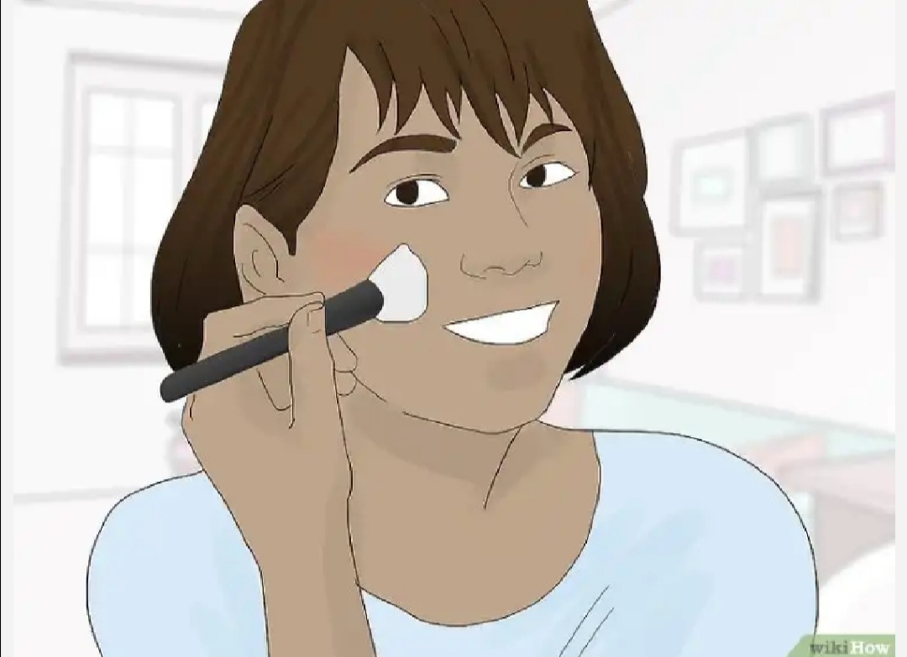

If you're 12 to 14 years old, you've probably only just gotten permission to start wearing makeup. When you're new to cosmetics, it's usually difficult to know where to begin. For youngsters who want to wear makeup, though, it's best to go with a natural look that plays up your natural beauty while making you feel more confident. If you want to start wearing makeup to middle school or junior high, remember to choose light face products and neutral colors so you achieve a fresh-faced look.
1
Start with a clean face. Wash your face before applying any makeup.
Use a gentle cleanser or simply a washcloth and water to remove dirt and oil from your skin.
You should also remove any makeup that may be on your face before applying more.
2
Choose a moisturizer with an SPF of 15 or higher to protect your skin from the sun
Put a small amount in clean hands and gently apply it to your skin
Putting moisturizer on before adding your makeup ensures your skin won’t look dry or flaky.
3
Pick a light lip color. Choose a chapstick or lip gloss with a light tint or a bit of shimmer.
Some products even come with delicious scents, like creamsicle or cupcake.
Avoid bold or dark colors, since they can age you.
4
Add a little blush. Choose a light blush in pink, salmon, or bronze.
You may even want something with a bit of shimmer or sparkle
Use a blush brush to lightly sweep the color onto your cheekbones, moving from the inside of your cheek to the outside
5
Leave your brows natural. There’s no need to fill in your eyebrows at a young age.
No matter their color or shape, they are beautiful exactly as they are.
It’s best to leave them natural, as you don’t want a dark, heavy eyebrow to distract people from your face (and over plucking is never fun).
6
Use mascara sparingly. If you have naturally dark eyelashes you can stick to clear mascara.
but if you have fair eyelashes you may want to use a brown or black mascara to darken them a bit and make them stand out.
Choose a waterproof mascara to prevent smudging and sweating it off.
7
Skip the eyeliner. Though you may be tempted to recreate that cat-eye look you saw on TV or in a magazine.
it’s best to save the eyeliner for special occasions. It can be tricky to apply, meaning your lines may be wobbly or uneven.
and may be a bit too bold for an everyday look.